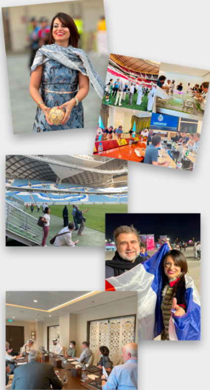

Coupe du Monde de la FIFA QATAR 2022
Notre client, l’Etat du Qatar, a été l’hôte de la Coupe du Monde de Football de la FIFA en novembre-décembre 2022. Etant en charge des relations Presse de l’Emirat en France et en Belgique, nous avons accompagné notre client tout au long de ce projet, en amont et pendant l’évènement. C’était un beau challenge pour nos équipes et une chance exceptionnelle de participer à l’organisation d’un des plus gros évènement sportif du Monde.
Nous avons organisé des voyages de Presse à Doha durant les années et mois qui ont précédé l’évènement afin de montrer la réalité du terrain aux journalistes (visites des infrastructures en construction, puis finalisées, et pendant la Coupe du Monde).
Nous avons organisé et accompagné de nombreuses interviews (l’Emir du Qatar, le Vice-Premier Ministre et Ministre des Affaires étrangères, le Président du Comité suprême d’organisation de la Coupe du Monde…), des reportages papiers, TV, radio…
Ces actions ont permis d’accompagner la première Coupe du Monde de Football de l’histoire organisée par un pays arabe et ont généré beaucoup de retombées dans les plus grands medias (TV, Radio, Presse papier).
